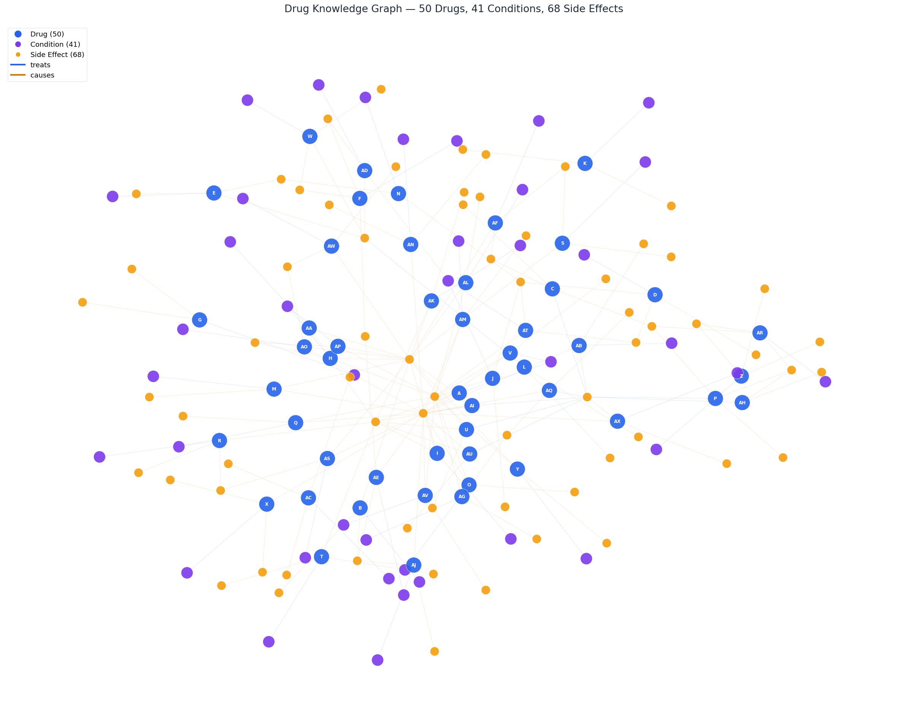
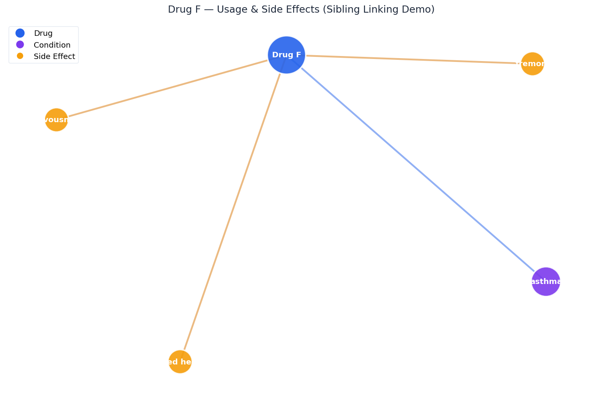
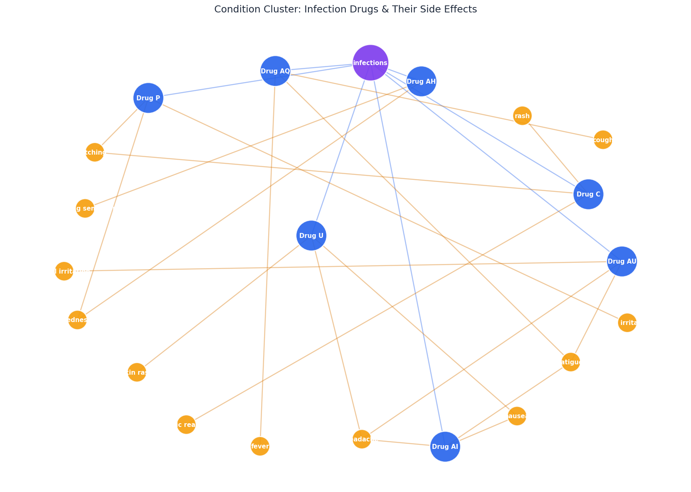

A hybrid RAG system that answers drug-related questions with 90% accuracy across 50 evaluation queries -- with a structured fallback that works without any LLM.
Every query flows through a 6-step pipeline. Each step is designed to maximize retrieval precision and answer quality while preventing hallucination.
The user asks a natural language question about drugs, conditions, side effects, or safety.
Before any retrieval happens, we analyze the query to determine its type. This decides which retrieval strategy and prompt template to use.
Three independent retrieval methods run in parallel. Each scores documents differently, and their scores are fused into a single ranking. This catches what any single method would miss.
Regex extracts drug names directly from the query. If "Drug F" is mentioned, its docs get a score of 1.0. Precise, instant.
Cosine similarity between the query and all 100 documents. Catches semantic overlap even when no drug name is mentioned.
Matches conditions ("asthma", "diabetes") and side effects ("nausea") against pre-built reverse indexes. Finds drugs by what they treat.
Every drug has exactly 2 documents: one for usage and one for side effects. When one is retrieved, its sibling is automatically pulled in. This is why multi-hop queries like "what treats asthma and what are its side effects?" work perfectly -- vanilla TF-IDF misses the second part.
After ranking, we detect sharp score drops between consecutive documents. If a document scores less than 40% of its predecessor, it and everything below it are trimmed. This keeps only the truly relevant results and avoids noise.
The retrieved documents are combined with structured summaries from a pre-processed knowledge CSV (drug name, conditions, side effects in clean columns). This enriched context is sent to the LLM with a query-type-specific prompt and few-shot examples.
From question to answer in practice
Type a question in natural language. The system handles side effects, usage, comparisons, safety concerns, and multi-part questions. Case-insensitive -- drug b works the same as Drug B.
Three retrieval layers score every document independently. Scores are fused, sibling docs are linked, and low-relevance noise is trimmed by the drop-off filter. Only the most relevant documents survive.
A query-type-aware prompt with few-shot examples guides the LLM. The model sees enriched context (raw docs + structured CSV summaries) and is instructed to refuse when information is absent. Choose from 3 free models.
When the API is down or you select "No LLM" mode, the system generates clean structured answers directly from drug_knowledge.csv. No hallucination possible -- only facts from the dataset. 74% accuracy.
The dataset is parsed into a structured graph of 50 drugs, 41 conditions, and 68 side effects. These are the indexes that power the retrieval engine.

All 50 drugs (blue), 41 medical conditions (purple), and 68 side effects (yellow) connected by "treats" and "causes" relationships. This is the graph that our 3-layer retrieval engine queries at runtime.

Drug F treats asthma (purple) and causes tremors, nervousness, and increased heart rate (yellow). The sibling linker ensures both the usage doc and side-effect doc are always retrieved together -- this is why multi-hop queries work.

All drugs that treat infections, clustered around the shared condition node. This is what the retrieval engine sees when you ask "Which drugs are used for infections?" -- the condition index maps directly to this subgraph.
50 questions across 8 categories, tested end-to-end with the full pipeline
| Category | Questions | Avg Score | Passed |
|---|---|---|---|
| Direct Fact Retrieval | 7 | 100% | 7/7 |
| Usage-Based | 7 | 100% | 7/7 |
| Reverse Lookup | 6 | 100% | 6/6 |
| Complex / Combined | 7 | 100% | 7/7 |
| Unanswerable | 5 | 100% | 5/5 |
| Multi-Hop Reasoning | 4 | 100% | 4/4 |
| Safety / Risk | 7 | 71% | 6/7 |
| Comparison / Multi-Drug | 7 | 61% | 5/7 |
| Overall | 50 | 90% | 47/50 |
No GPU. No heavy infra. Pure engineering.